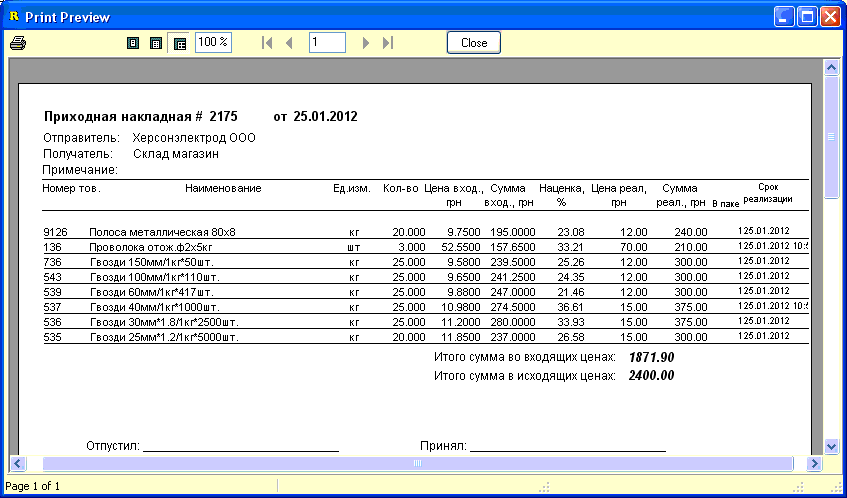
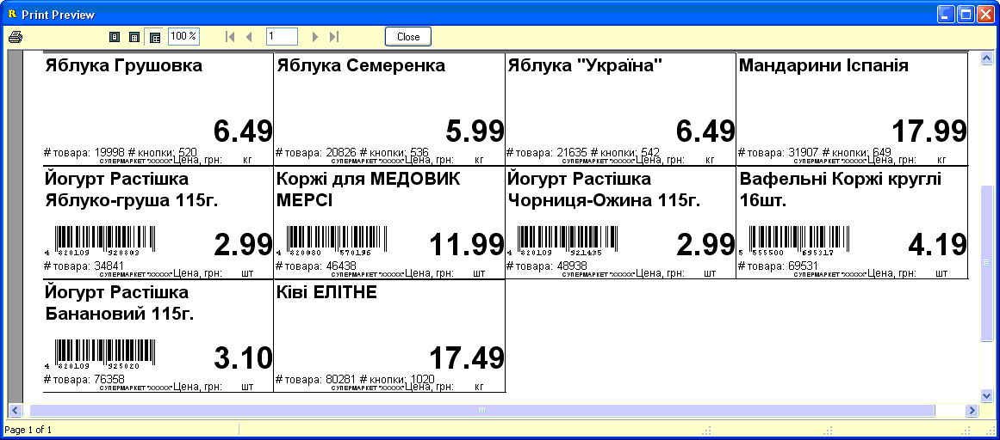

- Распечатать штрихкодовые этикетки можно выбрав
соответствующий пункт меню или нажав горячее сочетание клавиш Alt+P на
клавиатуре.
- Меню выбора опций при печати штрихкодовых
этикеток будет аналогично используемому в справочнике товаров, только
количество копий этикеток будет сразу установлено равное количеству выбранного
товара в накладной.

- Ценники и накладные можно распечатать только
после сохранения накладной, соответствующий вопрос будет задан, если
выбрать печать до сохранения или нажав горячее сочетание клавиш Ctrl+P на
клавиатуре.
- Первой выводится на печать приходная
накладная.
- 
- Вторыми на печать выводятся ценники, при этом
будет задан вопрос выводить на печать ценники на все товары в накладной или
только ценники на новые товары и товары у которых изменилась цена с момента
предыдущего прихода (опции управления отбором и дизайном ценников находятся в
настройках программы на вкладке "Ценники" - см.соответствующий раздел
справки).
- 
- После печати ценники и отпечатанные этикетки в
лентах передают в торговый зал, где работники магазина маркируют поступивший
товар этикетками, разрезают ценники и вставляют их в ценникодержатели на
полках.